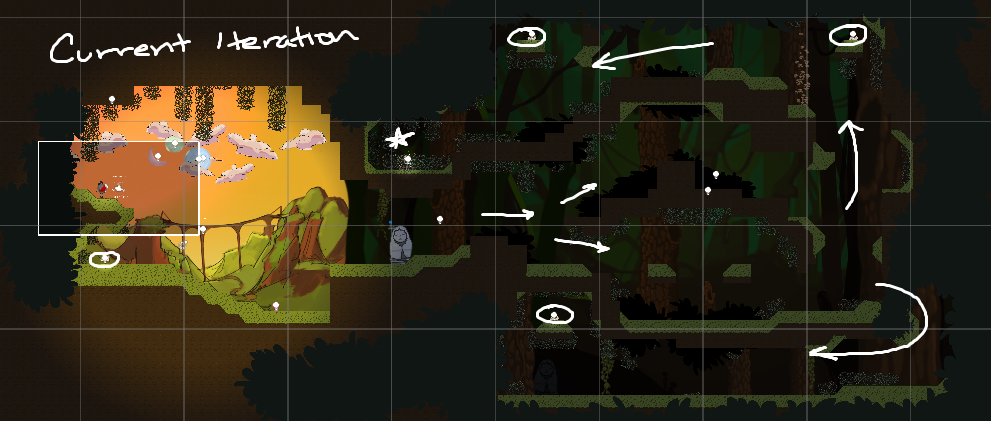
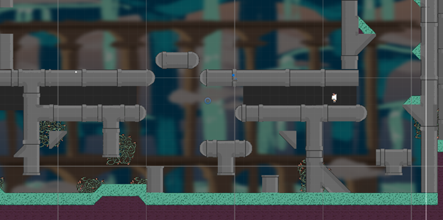
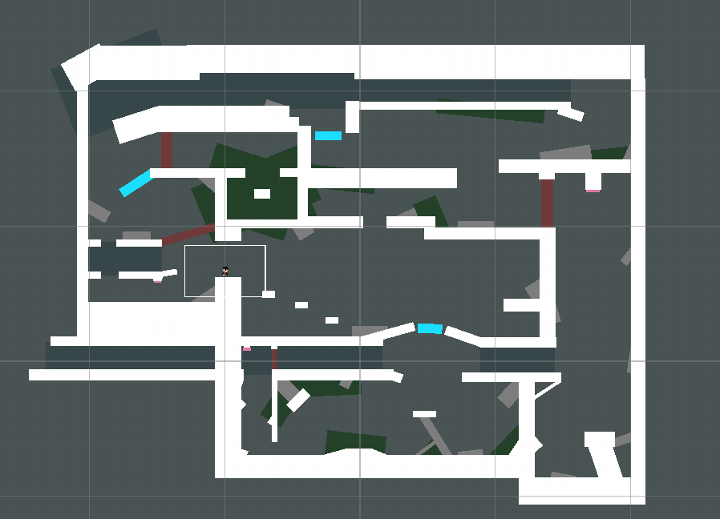
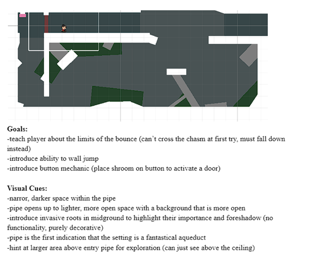
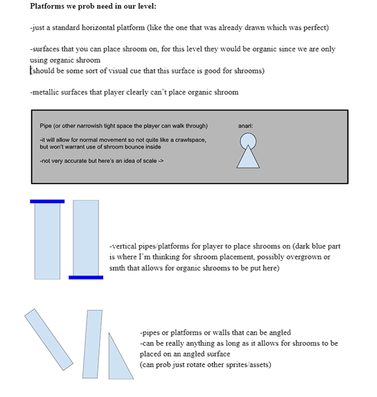
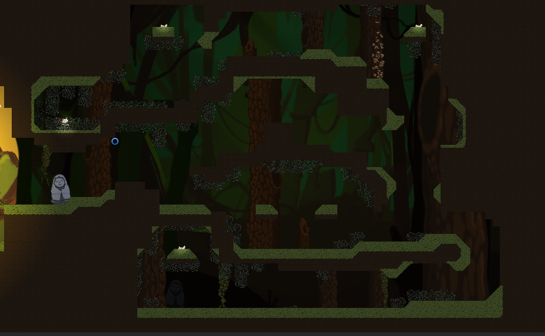

GOOD LUCK VALLEY
Good Luck Valley is a singleplayer, 2D puzzle-platformer game in which the player uses their ability to throw and bounce on mushrooms to traverse a mystical Spirit World. This project involves the collaboration of programmers, designers, and artists to create a unique and cohesive 2D experience.


As lead level designer, my primary task is to take assets and mechanics developed by the artists and programmers, and piece them together in the Unity game engine in order to construct interactive and immersive spaces for the player to traverse. In order to do so effectiveley, I documented every step of my processes, and honed in on communication between the environment artist and programmers.


Iteration is a key component of the level design process, and continuing to adapt constructed areas as more mechanics and deisgn choices are implemented.
Sketch iteration (left) to greybox iteration (right).


Additionally, I documented my thought processes and assets required for the implementation of each level, in order for all team members to reference and to provide additional clarity and cohesion of elements.

Further into development, I began transitioning from greybox iterations to tilemap iterations in Unity, which featured original game assets rather than placeholders. It is at this stage that we continue to iterate and polish moving forward with development.